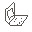

Borys Rok
Wroku 1958 została zbudowana pierwsza maszyna cyfrowa maszyna należąca do rodziny wczesnych komputerów, która została zbudowana i uruchomiona w Polsce.
Komputer ten został skonstruowany w Warszawie pod nazwą XYZ.
Wykonany projekt znajdował się w lokalu Biura Obliczeń i Programów Zakładu Aparatów Matematycznych PAN.
Zespołem twórców kierował prof.dr inż. Leon Łukaszewicz(wówczas docent).
XYZ był stosowany do obliczeń matematycznych oraz przeliczników artyleryjskich na potrzeby wojska.

W1960 roku programista Bogdan Miś napisał pierwszy program rozrywkowy - grę w kółko i krzyżyk.
XYZ doprowadzał do własnej wygranej lub remisu.
Kolejnym nienaukowym programem napisanym dla XYZ była animacja pieska obsikującego drzewo stworzona na potrzeby wizyty ekipy filmowej, tworzącej materiał o pierwszym polskim komputerze.
XYZ po późniejszych zmianach koncepcji na bazie tego komputera stworzono serię maszyn ZAM-2
ZAM-2 był polskim komputerem pierwszej generacji.
Przeznaczeniem ZAM-2 były obliczenia numeryczne oraz przetwarzanie danych.
ZAM-2 wyprodukowano w 12 sztukach w wersjach Alfa, Beta oraz Gamma.
Twórcy ZAM-2 otrzymali nagrodę państwową II stopnia w 1964 roku.
Wersja Alfa została wyprodukowana w dwóch sztukach.
Wersja Beta w rok później również w dwóch sztukach.
Najwięcej, bo aż osiem sztuk wykonano w wersji Gamma, z czego dwie sztuki wyeksportowano do NRD.